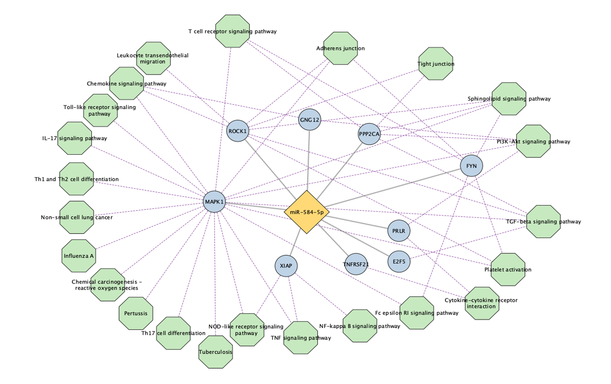

LD Block-Based Genotype Embeddings for Asthma Biology and UK Biobank Extension (Ongoing)
Built a two-stage LD-block representation learning framework for asthma genotype data, combining block-wise VAEs with transformer-based contextualization to learn biologically meaningful subject embeddings.

Two-stage LD block embedding framework showing independent block encoding, transformer contextualization, emergent genomic structure, and biological interpretation including HLA class II dominance and PDE4D emergence.
Key insights
- Recovered known structure: HLA class II emerged as the dominant unsupervised axis.
- Found secondary biology: PDE4D appeared after masking HLA effects.
- Scaling next: The framework is being extended to UK Biobank-scale cohorts.
Proteomics Analysis of Long COVID Heterogeneity
Developed an end-to-end proteomics workflow to characterize neurocognitive Long COVID using Olink NPX plasma proteins. Performed covariate-adjusted logistic regression across pediatric samples to identify subtype-specific protein signatures associated with neurocognitive symptoms.
Extended the analysis to ~50,000 UK Biobank participants by building scalable PySpark and SQL pipelines for large-scale phenotype and proteomics integration. Stratified participants into neurocognitive and non-neurocognitive Long COVID subgroups based on WHO symptoms and identified replicated protein-level signatures linked to immune and neuroinflammatory pathways.
Ongoing work includes protein–protein interaction network analysis and pathway enrichment to identify higher-order regulators of Long COVID heterogeneity.
Key insights
- Subtype specific discovery: Identified distinct proteomic signatures associated with neurocognitive versus non-neurocognitive Long COVID.
- Replication at scale: Replicated pediatric findings in ~50K UK Biobank participants using distributed Spark-based pipelines.
- Key protein markers: FGF23, CXCL11, IL2RB, IL17C, and FGF21 emerged as candidate regulators of Long COVID heterogeneity.
- Scalable workflow: Built reusable PySpark and SQL pipelines for integrating large phenotype and Olink NPX datasets.
- Systems-level interpretation: Ongoing PPI and pathway analyses connect significant proteins to shared inflammatory and neuroimmune pathways.
Endophenotype-driven GWAS Framework for Asthma Heterogeneity
Developed a machine learning driven GWAS framework to model asthma heterogeneity using PCA-derived clinical endophenotypes. Patients were stratified into five ordinal subgroups (Q1–Q5) spanning mild to severe, atopy-rich disease. These subtypes were integrated into a categorical ANCOVA model, enabling simultaneous association testing across biologically coherent patient groups and improving detection of subtype-specific genetic signals.

PCA-based clinical stratification into endophenotypes (Q1–Q5) integrated with categorical GWAS to identify subtype-specific genetic associations.
Key insights
- Subtype-aware GWAS: ANCOVA-based modeling across all endophenotypes increased power, identifying 244 significant SNPs versus limited findings from standard approaches.
- Robust replication: Six loci (e.g., DGKI, MIR99AHG) replicated across independent cohorts, enriched in severe subgroups (Q4–Q5).
- Treatment stratification: Endophenotypes predicted ICS response, with the most severe group showing greatest lung function improvement.
- Biological alignment: Genetic signals mapped to clinical gradients (IgE, lung function), improving interpretability for precision medicine.
Representative publications: PCA based endophenotype definiton , ANOVA for endophenotype specific GWAS , Asthma pharmacogenetics through subtype specific associations
miRNA Modifiers of Inhaled Corticosteroid Response in Asthma
Investigated molecular drivers of variable response to inhaled corticosteroids (ICS) in asthma using circulating microRNA (miRNA) profiles. Applied interaction modeling (Exacerbation ~ ICS × miRNA) across two pediatric cohorts (CAMP discovery and GACRS replication) to identify biomarkers associated with treatment resistance.
Identified miR-584-5p as a novel modifier of ICS response, where higher expression was associated with increased exacerbation risk specifically in treated patients, highlighting its potential as a biomarker for steroid resistance.

Pathway enrichment highlighting TGF-β, NF-κB, and immune signaling pathways linked to miR-584-5p–mediated corticosteroid response.
Key insights
- Interaction-based discovery: ICS × miRNA modeling identified modifiers missed by standard differential expression approaches.
- Novel biomarker: miR-584-5p was associated with increased exacerbation risk specifically in ICS-treated patients.
- Cross-cohort validation: Findings were consistent across independent pediatric cohorts (CAMP, GACRS).
- Biological relevance: Enriched pathways (TGF-β, NF-κB, T cell signaling) link miRNA regulation to airway inflammation and remodeling.
Representative publication: Micro-RNA-584-5p as a key modulator of ICS resistance (Full paper in progress)
Machine Learning Analysis of Pediatric COVID-19 Clinical Data
Developed a Random Forest Classifier to predict COVID-19 infection status in children using a dataset of 2,572 chest X-ray impressions and electronic medical records. By integrating radiological findings, clinical symptoms, and demographic variables, the model achieved an F1-score of 0.79 and an AUC of 0.85.

SHAP summary highlighting radiological, symptom, and demographic features that contributed most to pediatric COVID-19 prediction.
Key insights
- Feature engineering & selection: NLP and NegEx were used to identify 16 radiographic findings, including pneumonia, atelectasis, and small airways disease.
- Model interpretability: SHAP showed that radiological and constitutional features were more predictive than prior medical history.
- Demographic insights: Age, sex, and ethnicity, particularly Hispanic males under age 8, contributed meaningfully to model performance.
- Incremental modeling: Compared five Random Forest models to assess feature contributions, showing radiological features as primary predictors, with symptoms and demographics improving performance.
Representative publication: Case control prediction using clinical data
Context-aware testing of mobile applications
Developed a framework for testing context-aware mobile applications by modeling event-driven behavior using probabilistic and neural approaches. Combined conditional random fields (CRFs), neural network–based component discovery, and combinatorial optimization to capture dependencies between user actions, system states, and environmental context, enabling systematic exploration of large, constrained event spaces in Android applications.
This work established a foundation for modeling structured, dependent data and scalable search strategies—principles that extend to my current work in genomics and clinical machine learning.
Key insights
- Structured sequence modeling: CRFs captured temporal dependencies in event-driven data.
- Neural component discovery: Learned representations identified latent system components.
- Scalable test generation: Combinatorial methods efficiently explored large event spaces.
- System-level impact: Built CATDroid for automated testing of sensor-driven Android apps.